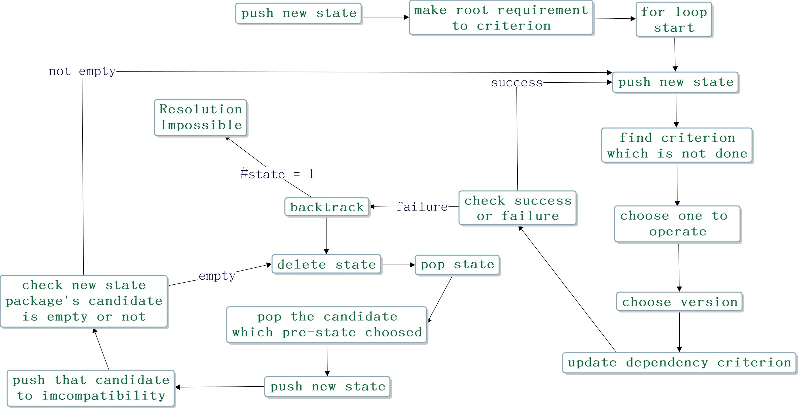

Article
Pubgrub algorithm
Pubgrub has four important parts.
1.Unit propagation(find a specify package range) 2.Decision making (choose one version in range)3.Conflict resolution (if conflict,do that process)4.Error reporting--you can check more information in ourslides

Resolvelib in pip
Resolvelib want to choose latest version and just linearly find package's version
